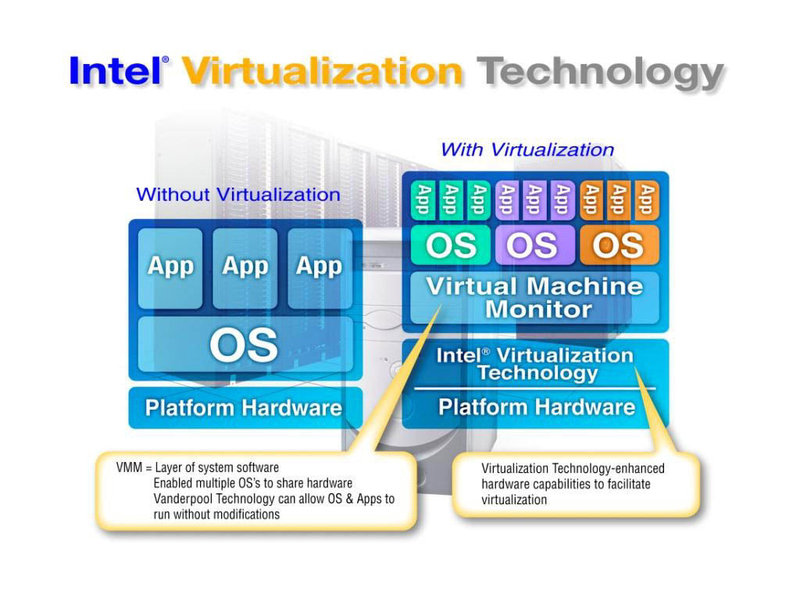

A Linux operating system is an entirely different beast compared to a Microsoft operating system. Microsoft was constantly torn about how much value to invest in Windows, and how much to set aside for extra licensing revenue in other products. Windows Vista has five different versions, (originally they announced eight!), each with basically the same code, but with dramatically different prices:
| Product | Upgrade | New |
|---|---|---|
| Windows Vista Ultimate | $243 | $350 |
| Windows Vista Business | $176 | $260 |
| Windows Vista Home Premium | $140 | $219 |
| Windows Vista Home Basic | $85 | $157 |
| Windows Vista Enterprise | Custom volume license | |
Microsoft charges $85 to $350 for Windows Vista, but the code in each version is 99% the same.
Microsoft's natural goal is to put as many new and compelling features into high-end, high-profit versions even though the prices are not correlated to the work required to build the various Vista versions.
Creating multiple versions is tricky because if third-party applications depend on features that aren't in a particular version of Windows, then the applications won't run, and the Windows brand is weakened. Therefore, Microsoft would sometimes add logic to cripple the performance of high-end features on low-end versions. In the free software world, no one deliberately cripples their own creation.
When I worked at Microsoft, there were numerous turf wars. For example, the Word team fought with the Windows team over whether WordPad, a tiny Windows applet, should have the ability to read Word's DOC files. The Windows team wanted to create an operating system that had the ability to display the hundreds of millions of DOC files, but the Word team didn't want to create a reason for people not to purchase Word. There were also running battles between the teams responsible for Outlook and Outlook Express, Exchange and SQL, Works and Word, FoxPro and Access, Access and VB, SQL Server and Access, PC and XBox. Each team was paranoid about another team adding functionality that would discourage someone from buying their product.
Microsoft also was torn between bundling important features in the operating system, like they did with web browsers, instant messaging and multimedia, and leaving features out in order to reap more money later. Windows doesn't ship with a dictionary because Office has one. Windows doesn't come with development tools because those are part of Microsoft's Visual Studio business. With Linux, anything free is welcomed into the operating system.
In addition to Microsoft's strategic decisions to exclude certain features, there are also cases of benign neglect. The Sound Recorder in Windows XP lets you only record for 1 minute, a limitation that exists from the days of 16-bit Windows that no one bothered to fix. Microsoft's official solution is for the customer to purchase Office OneNote.
Applets, command-line tools, and many other important but unsexy parts of an operating system were always allocated very limited resources. Ask Steve Ballmer for resources for the unimportant Sound Recorder, and you would receive a dirty, polystyrene fork hurtling in your direction. In the free software model, anyone, on their time frame, can improve a piece of code that is useful or interesting to them, whether “strategic” or not. Eric Raymond calls this phenomenon a developer “scratching their own itch.” Wikipedia is built almost entirely from this mechanism, and only free software can capture every little advancement.
Even if you believe it is perfectly okay to charge for software, it is hard to know what to charge consumers for software. Microsoft used to charge a fixed amount for a server product. However, one day they realized that customers who had 10 users connected to a server should be paying less than those who had 100. This observation resulted in the creation of client access licenses (CALs); a concept that required payment for each individual user of server software, but which is an additional burden on the customer. If you have 1,000 employees accessing 1,000 servers, you need to fill out a lot of paperwork.
This was all before the invention of the Internet whereby the number of users of a server could easily be in the thousands and which made many usages of CALs expensive and unsustainable. Therefore, Microsoft moved towards a model where the cost was based on the number of processors in the computer so that little boxes would cost less than big boxes.
This model worked until Intel introduced the concept of “hyperthreading”, which fools a computer into thinking there are two processors inside the computer, but which adds only 15-30% more performance. Microsoft's customers would of course be unhappy at the thought of purchasing a bunch of new licenses for such a small performance improvement, so Microsoft ended up giving free licenses for hyperthreaded processors.
Then, virtualization was created:

Intel virtualization marketing diagram: Virtualization allows the ability to run multiple operating systems on one computer: each instance thinks it controls the machine. The best uses for virtualization are web hosting, inside corporate data centers, and for software developers.
Virtualization allows different applications to be fully isolated from each other inside different complete instances of an operating system, but at the same time share the CPU and other hardware resources. Isolation is important because even within a single company's data center, different departments don't want to run their code on the same machine. If Hotmail went down, they didn't want it to be the fault of the Microsoft Bob web page.
I was told that inside the cavernous datacenters of a Fortune 500 company, the computers used on average only 15% of their CPU's capacity. The different departments all maintained their own hardware, which they'd built out to handle the maximum possible load; this is an idea as silly as utilizing only 15% of an office building.
Virtualization gives you software isolation but allows you to share hardware. However, when you install more proprietary software, licensing issues arise. If I put three copies of a database server in separate virtualization instances on a four-processor computer, under many of Microsoft's licensing models I would have to purchase enough licenses for 12 processors — even though the computer only has four. Like hyperthreading, virtualization is another technology that wasn't conceived of when Microsoft created their per-processor licensing model.
In a free software environment, you can add new hardware and add or remove applications without paying or keeping track of anything. I will write more about economic aspects later, but for now it is only important to understand that free software sidesteps these hassles, which are often very onerous for enterprises.
An interesting moral dilemma for proprietary software vendors is whether to allow pirated copies to receive security updates.